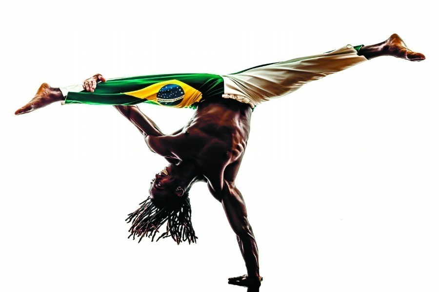

Biografia Breve
Nascida em Sacramento, Minas Gerais, em 14 de março de 1914, Carolina Maria de Jesus mudou-se para São Paulo e viveu grande parte de sua vida na **Favela do Canindé**. Ela sustentava a si mesma e seus três filhos (João José, José Carlos e Vera Eunice) como **catadora de papéis**.
Com apenas dois anos de estudo formal, ela desenvolveu um profundo amor pela leitura e, nos cadernos que encontrava no lixo, registrava o seu dia-a-dia, que viria a se tornar sua obra mais famosa.
biografia mais"Quarto de Despejo: Diário de uma Favelada"
Seu primeiro e mais conhecido livro foi publicado em 1960, com a ajuda do jornalista Audálio Dantas. A obra é um **diário** que relata com brutalidade e sensibilidade a luta diária contra a fome, a desigualdade e a miséria.
"A fome é a melhor professora. Ensina a gente a viver com o pouco que tem."
Outras Obras Notáveis
- **Casa de Alvenaria: Diário de uma Ex-Favelada** (1961)
- **Pedaços da Fome** (1963)
- **Provérbios** (1963)
- **Diário de Bitita** (póstumo)
Legado e Reconhecimento
Carolina Maria de Jesus é considerada uma das vozes mais importantes da literatura brasileira, sendo uma **precursora da literatura negra e periférica** no país. Sua obra continua sendo estudada e ganha novas adaptações, como o futuro filme de "Quarto de Despejo".
Cultura e Resistência
Assim como a escrita de Carolina, a cultura afro-brasileira criou diversas formas de resistência e expressão. A capoeira é um exemplo poderoso de arte que nasceu da luta por liberdade.
Conheça a História da CapoeiraGrandes Nomes da Literatura
A literatura brasileira é rica e diversa. Conheça também a história de Machado de Assis, outro gigante que revolucionou as letras no país.
Conheça Machado de AssisÍcones da Luta Antirracista
Conheça também a história de Angela Davis, uma filósofa e ativista que se tornou um símbolo global da luta pelos direitos civis e contra o racismo.
Conheça Angela Davisimagems historicas


